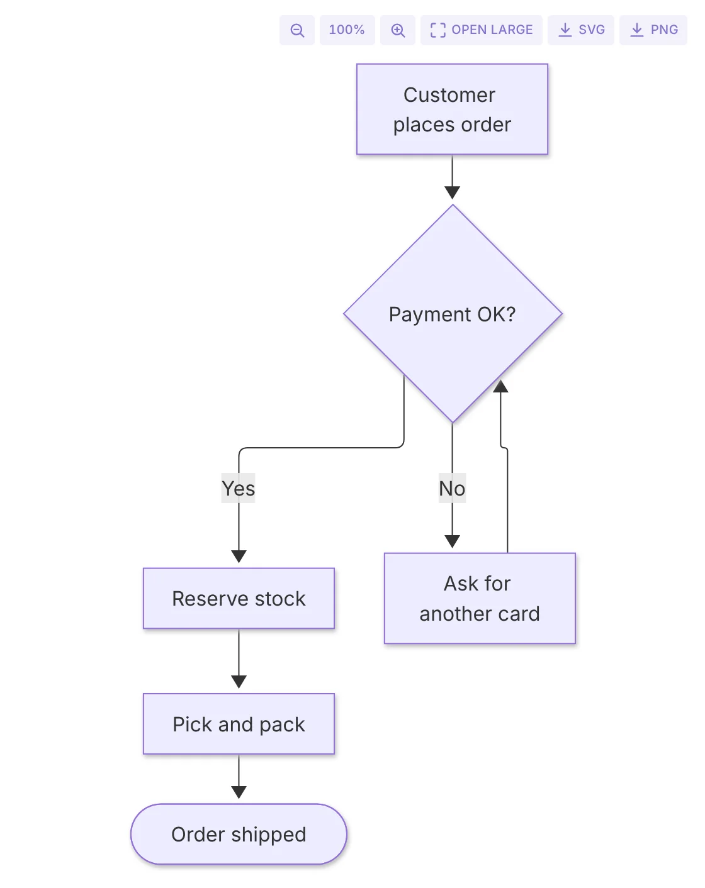
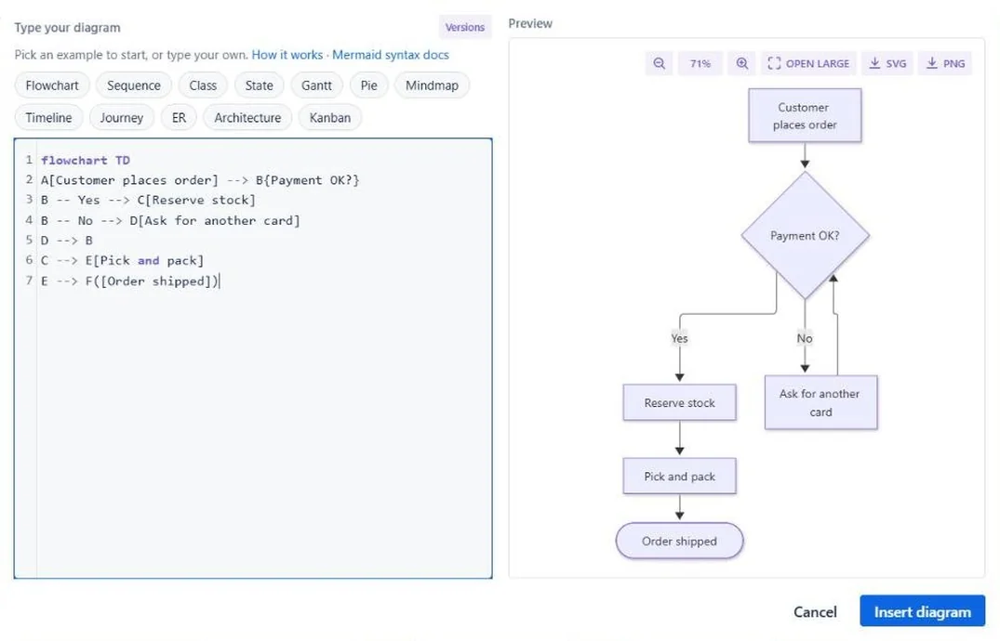
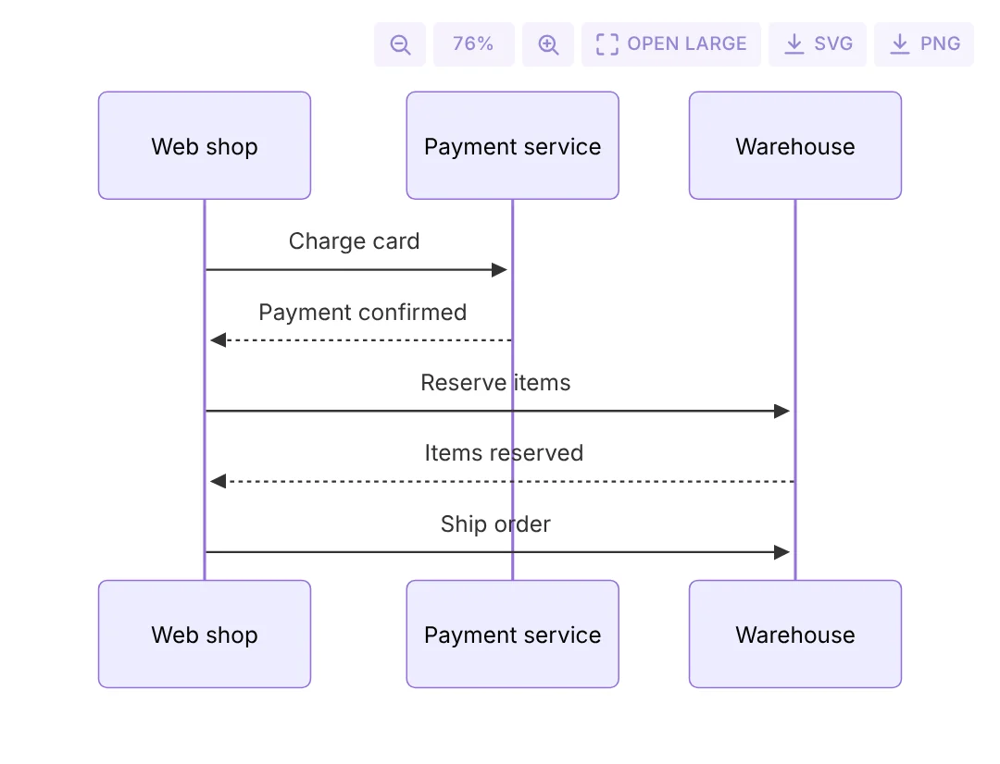

Mermaid Editor · Confluence macro
Type the diagram. Watch it draw itself.
Flowcharts, sequence diagrams, Gantt charts, mindmaps and more inside a Confluence page. The preview updates next to the text while you write, and the text stays in the page.

Diagrams rot because they are pictures
Someone exports a flowchart from a drawing tool, pastes the image in, and leaves the company. The process changes and nobody can edit the picture. A Mermaid diagram is text: change one line, the drawing follows.

Write it in the page
Add the macro and type Mermaid syntax on the left. The preview on the right redraws as you type. If a line is wrong, the error shows the line and what Mermaid expected.
Keep it editable
No round trip to a drawing tool and no orphan PNG in an attachment list. Need a picture anyway? Download the diagram as SVG or PNG.
Step back safely
The last 20 saves of each diagram are kept, so a bad edit is not a lost diagram.
Start from an example
The editor has 12 examples: flowchart, sequence, class, state, Gantt, pie, mindmap, timeline, journey, ER, architecture and kanban. On the page, a diagram fits the width, and you can zoom in or open it large. Light and dark theme follow Confluence.
-
Flowchart
Decisions, branches and handovers. The diagram most runbooks are missing.
-
Sequence
Who calls whom, in order. Useful for the integration you keep re-explaining.
-
Gantt
Tasks, dates and dependencies for a project plan that changes every week.
-
Mindmap
Ideas and topics around one centre, for workshops and planning pages.
-
Timeline
Phases and milestones, without dragging boxes into place by hand.

Runs on Forge, draws in your browser
The macro runs on Atlassian Forge. The diagram source is saved in the macro on the Confluence page. Version history is kept in Forge app storage in your cloud site. The diagram is drawn in the browser of the person viewing the page. There are no external services and no account, and nothing is sent to Dortus.
- Platform
- Atlassian Forge macro
- Source
- In the macro on the page
- Rendering
- Mermaid 12, in the viewer's browser
- History
- Last 20 saves, Forge app storage
Live on the Atlassian Marketplace
Mermaid Editor for Confluence (formerly Mermaid Live Preview) is live on the Atlassian Marketplace. Install it from there into your Confluence site.